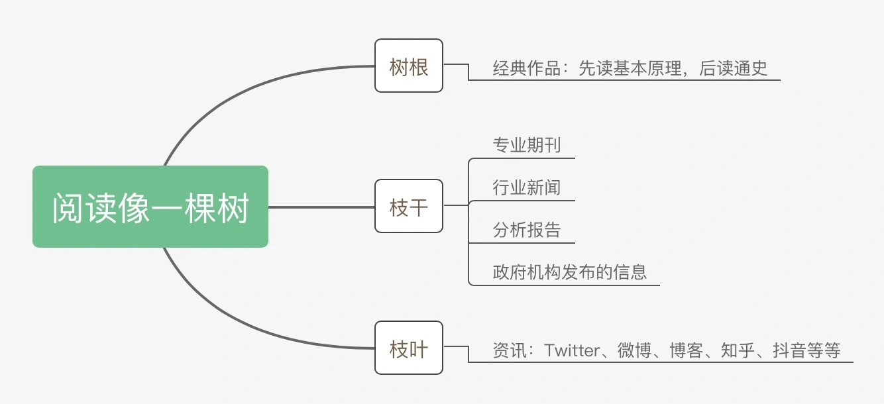

阅读经典的顺序：先读基本原理，再读通史。读经典不能只局限于一个领域。
专业期刊、行业新闻、分析报告、政府机构发布的信息，可以在碎片化的时间去浏览。

深度阅读和浏览：经典一定要深度阅读，其它的浏览即可。
一个好的学习者，都会有一个习惯。当读完一本书或者一则材料后，会把作者要传达的观点整理或者复述出来。
- 边读边划重点。
- 提出问题。
联想：阅读一本书或者一则材料时，把自己所知的事和阅读文本联系起来。
随时记录：
- 观点类，把有意思的观点记录下来，标明出处，方便查找
- 表现手法类，联想一下这个手法可以用在什么地方
- 自我感想类，把自己突然迸发的感想用方案表达出来
一个好的写作者，常常是苛刻的，惜墨如金，找不到半点废话，也找不到一个故作高深之语。对一篇好的写作而言，文风一定是简单干练的，一字能说清楚绝不说第二个字。
一篇好文章的特质：
- 文字简单清晰
- 用词恰如其分
- 描写精准、服务主题
所谓独到，就是指作者看到了一些读者没有注意到的东西，看了这篇文章后，读者才明白，哦，原来是这样子的。
“以正合”就是用读者熟悉的解读方式、熟悉的意象去讲你的主题，而“以奇胜”就是强调作者自己的思考，利用你的独特观察创造性地去解释读者没有注意到的东西。
4大写作误区：
- 滥用形容词和连词
- 不仅指写作者使用形容词不准确，还有堆砌形容词的意思。不滥用，不是不用，而是要把形容词用精当。想不出来精准的形容词，就不要用。
- 连词用得过多，会影响句子的节奏和美感。除非逻辑表达容易混淆，否则，慎用连词。
- 中西文化
- 滥用被字句：中文的正常表达，是主语+动词+名词，要改变句式顺序，一定要有特别的原因（比如强调）
- 喜欢用弱动词：也称为“万能动词”，比如造成、进行等
- 喜欢用从句
- 随意堆砌段落：注意两个不相关段落之间的联系。
- 缺乏逻辑思维
- 写作的第一要务就是要清楚地表达信息，我们要根据不同的文本，使用不同的信息。
- 对专业论文要多用记述信息为了准确，对科普文章要多用评价信息，方便理解。
怎么从一个现象或者人物拎出来一个好主师或者找到一个好的角度呢？如果用一句话来回答这个问题，那就是你想表达的主题，一定要和某个更大的东西联系起来。这个更大的东西可能是一种情感，比如爱、孤独；也可能是一种观念，比如自由、平等；还可能是一种反思，比如对公共安全的拷问等等。
- 找开宽度：跨领域思考（发散思维，开放性话题）
- 政治角度：官方的态度
- 经济角度：价格、税收、贫困、福利等
- 文化角度：社会
- 看热搜；记观点；看评论对比
- 挖掘深度：由表及里（逻辑思维，某一现象分析）
- 层层剥茧、由表及里，不断地追问
- 关键点是细致观察
好的文章一定是饱满的，而饱满的表达一定需要一副好骨架。其中，主心骨是必要的，它决定了这篇文章能否打动人，是否具有吸引读者阅读的价值。
《故事》：文章的真正主线不是一个词语，而是一个连贯的句子，这个句子一定能够清晰地概括整篇文章。（一句话法则）
一句话法则：
- 你想写的内容中，最打动你的价值是什么，然后把它概括出来
- 最重要的是找关键词，这个关键词代表着最能打动你的价值
- 通过“一句话原则”，先确定价值（找关键词），再高度概括
三段式：
- 触发：导火索、引子。
- 事件或者人物是什么？
- 情景？
- 悬念？
- 冲突：文章内容里的矛盾之处。
- 目的是让读者对内容产生认同
- 我笔下的矛盾，你也可能遇到
- 越是把某个现象、人物推向两难境地，就越能提示一个事物的本质
- 解决：这个问题、现象或者人物，在经过我们分析、描述、刻画以后，有了一个新的看法或者最终的结果。
- 留个有韵味的收尾
展开骨架：时空坐标系，建立起时间和空间两条线
- 时间：倒叙、插叙
- 双时间线：用短时间线串起动态的场景，长时间线作为整个文章的背景（适用于时间跨度长、事件或人物主角出现的场景不断变化）
- 空间：适合宏大的主题。
优秀的文章开头，大多有个共同的特质，那就是神秘或冲突。当你打算写一篇文章，搭建好框架之后，就要把文章中最神秘、冲突的因素放在最前面，重新组合，然后再娓娓道来，读者体验会好很多。
三步法开头：
- 找到写作内容中最具神秘、冲突的部分，把它记录下来
- 把写作内容中最具神秘、冲突的部分进行拆分，拆分成人物、事件、地点、时间、数据等小元素，然后把其中的1-2个小元素放大
- 为那些放大的特质建立画面
综述型开头：需要你跳出已有的素材，去归纳整篇文章的主旨。当你对某个主话题恰好有些理论上的认知，或者恰好有些意象能够全面地概述主旨，建议使用综述型开头。
- 把看似无关的信息联系起来，也就是联想能力
- 归纳概括能力
细节型开头：1-2个特有的、能打动人的元素。
叙事节奏：速度感、力量感和变化感。
- 速度感，就是作者采用的句式往往是以知句组成，这些短句能够用最少的字数传递相当多的消息，能够特别有效地带领读者通过这些短句来理解复杂的环境。
- 它可以帮助写作者制造一种意象或者动作的连贯感，让读者感到有很多意象或者动作是同时连续发生的
- 材料过于静态、平淡的时候需要速度感
- 动词、连句，短句、简单句式，如果写和句式过于复杂，它就会拖慢你的表达
- 力量感，排比、重复增强力量感，或者调换的句子的语序
- 把关键的雇主放在开头或者结尾，而不是让它埋没在句子中间
- 重复会减少速度感
- 如果你确定这段内容确实重要，必须让读者感受到你要表达的这种情感，牺牲速度是被允许的
- 要从上下文来考虑，如果它们一直都是快节奏，在你犹豫是不是要放慢速度、增强力量感的时候，可以考虑慢下来，这样可以产生变化感
- 变化感，句式上的变化，句型上的变化
叙事策略：原则，一定要有递进的关系
- 多线叙事：文章同时拥有几个叙事主线为同一个主题服务
- 环形叙事：非线性叙事，适用于事件或人物难以逃脱宿命的题材
一个重要人物出场，最好有独特的细节描述，比如形象特征、话语特征，以确保读者能记住这个人物。
引语两个基本要求：
- 必须符合人物身份
- 内容要有特质
用引语的时候，简短、犀利，切忌冗长、枯燥。不完整地引用整句话，而是单独引用一个词组或者一个词。
制造悬念：
- 最简单的就是“和什么什么不同”
- 复杂点的就是“如果一切顺利的话，某某人此刻会在做什么”
一个人的细节特质是要和场景联系起来的。
闭门造车是弄不出来细节的。细节的抓取必须来源于观察，这是最基本的方法。
精确联想是细节写作的法宝之一。
- 联想共情的细节
- 联想那些让你觉得异常、会产生反差的细节
借助道具，运用人物、事件身边与之关系密切的东西，来凸显它的特点。
细节就是要把模糊的变成具体的。
细节详略得当：
- 环境细节描写的重要性小于人物描写的重要性
- 人物细节描写中，描写五官感受到的细节比描写人物的心理活动细节来得重要
遣词造句基本原则是，要正确是使用语法、句法和词语，不要出现病句和错句。基本方法是，培养语感。
词语：
- 精确凝练：不是做生意一个名词都需要修辞的，不是任何一个动词都需要副词去衬托的。
- 不到万不得已不用弱动词，比如“进行”“造成”这样的动词
- 慎用形容词和副词，特别是不知道怎么形容的时候，宁可不用
动态感表达：尽量让一篇文章里的每个元素都充满活力。
- 强用动词
- 静态事物也可以赋予事物以生命
句式：
- 语句顺序
- 如果你在第一幕中展示了一把枪，它就必须开火
- 把描述不同点、异常情况的句子先交代出来，为下文的争吵预埋伏笔
- 打破常规
- 让句子有快慢：快，缩短句子，去除冗余的信息；慢，用细节描写
- 让句子有不同视角
叙述距离：指故事叙述者，也就是作者所处的一个位置，也叫心理距离。写作者有时很难意识 到，他在描述一个人或者一件事情的时候，其实已经选择了一个叙述距离。
- 文章里有没有特定的内部视角，也就是说你在描写一件事情的时候，假设你不在现场；呈现，通过内部视角一层层地剥离出来，让读者方便阅读。
- 文章里有没有概述性视角，也就是说作者是否在场景之上，故事之外？表达，把文章的意义表达给读者。
文章中的论据类型：
- 事实论据，来源于生活或者历史
- 道理论据，名人名言、俗语
- 数据论据
- 用平均数来代替一些大的数据
- 提供一些参照物来解释数据
- 当数据多的时候，会显得拥挤，记得换一种表述
连贯性修改：
- 寻找那些细小而多余的结构，找东西替换它或者删掉它
- 设计一具好的路标，当然，如果这个路标没有意义，那就不要用它
热点文章：
- 泛读材料：尽可能多地浏览相关信息，人物、事件、地点分类，标注争议点
- 精读材料 ，确定主题：挖掘忽略的部分
- 原因模块：事件触发的原因。注意，你分析的时候要找到深层次的原因。
- 历史模块：人和事以前是怎样的，对现在有什么影响。
- 范围模块：人和事的影响有多大，程度有多强。
- 反作用模块：和主流声音持相反观点或者我笔下的人物是怎么回应的。
- 谋篇布局：一句话法则、三段式结构
- 策划开题，人物出场：神秘或冲突特质
- 成文
- 开头营造悬念
- 过程注重细节、设置路标、顶真过渡
- 可重点修改：叙事节奏、数据应用、叙述距离
- 结尾点题
热点事件出来以后，执笔者应该审慎，对事件保持警惕，而不是天马行空，但绝不是说保持沉默。
- 快，快速了解事件始末，核心问题
- 准，事实要准，观点要准，才能让用户读者信任你
- 深，内容要深，写出来的文章要较为深刻，不能蜻蜓点水，否则就没有感染力
我们在写人物的时候，其实是在寻找人物意义，只有能解释人物意义的信息才可以帮助用户理解人物。
- 情节，也就是已经发生的行为，用户喜欢看在这个特定情节中人物发生了什么
- 反应，在这种特定情节下，人物的思考和应对分别是什么
演讲稿：
- 寻找切入口，让一个空泛的主题落地生根，落实到个体生命上去，从身边的体悟中去升华
- 建立框架，寻找论据：三段式，是什么，为什么，怎么办
- 谋划开头，关注叙事节奏：能否在第一时间拉近和听众的距离
- 成文
故事就是从事情当中挑选出来的精华部分，把故事元素和其它材料分离，并把它们组织起来形成意义，而意义才是故事的本质。
- 推断法：通过追问去推断具体事件背后的故事
- 综合法：向内联系，挖掘小故事之间的联系
故事的三个层次：
- 叙事，也就是发生了什么事
- 人物对事件的感受和应对
- 组合，把不同元素组合起来，唤起故事的普遍意义
故事的基本结构：
- 最初的平衡状态
- 平衡被一些行为打破
- 人物对平衡被打破的认知
- 人物为修复平衡所做的努力
- 平衡的修复或失败
普罗普剧情中的7类人物

把故事写精彩
- 要有对话。当故事需要喘息的时候，用对话可以放慢节奏，等等读者的脚步，让他进入故事当中；当突出反映人物性格的时候，对话也是一种好的技巧。
- 将故事与观念融合。简单来说，就是要让作者为读者解读。要成为一个好的解读者，就要对材料有强大的掌控力，在此基础上对故事背景作恰当的说明。怎么说明呢？可以提供不同类型的论据。